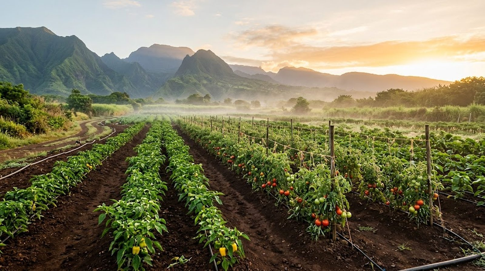
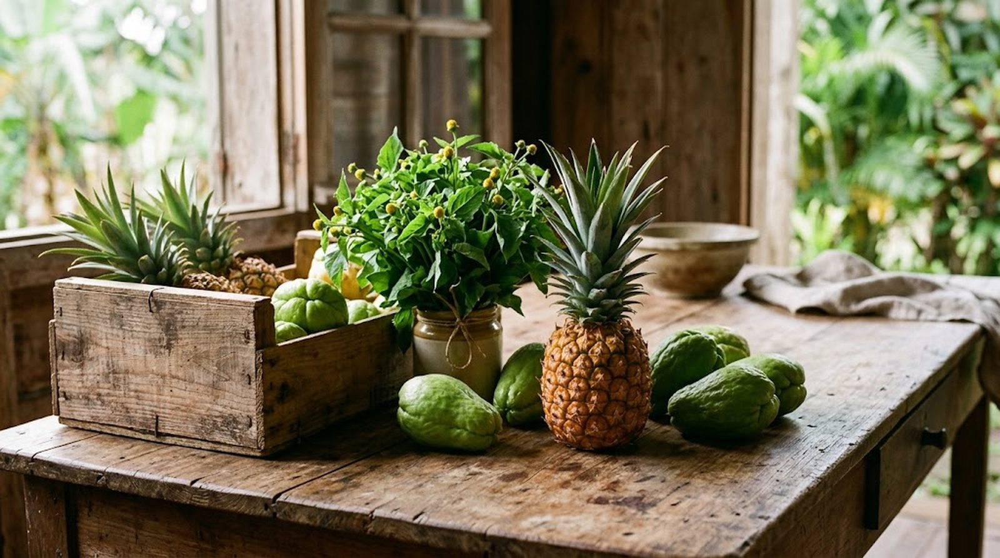

Productrice · Grossiste
La Réunionnaise Bio
Fruits et légumes de La Réunion, de L'Étang-Salé jusqu'à vos cuisines, vos étals et vos cantines.
Fruits et légumes de La Réunion, de L'Étang-Salé jusqu'à vos cuisines, vos étals et vos cantines.
La Réunionnaise Bio est une productrice-grossiste installée à L'Étang-Salé, entre mer et forêt. Son métier : rapprocher les fruits et légumes de celles et ceux qui les cuisinent, les vendent ou les dégustent.
La vidéo « Etang-salé, ma ville » dit l'attachement à cette commune du Sud : ici, le travail de la terre se fait au plus près des gens.
Votre histoire, vos cultures et vos engagements viendront enrichir ce texte, à votre rythme.

IllustrationUne liste d'exemple pour montrer le principe. Le vrai catalogue de saison, avec vos conditionnements, se construit ensemble. Touchez un produit pour l'ajouter à votre message.
Votre sélection apparaît ici. Choisissez des produits, puis envoyez votre commande.
Commander par WhatsApp
Illustration Illustration
IllustrationDes produits frais pour vos cartes du jour, avec une interlocutrice proche de vous.
De quoi garnir vos étals de fruits et légumes de saison.
Des approvisionnements réguliers, pensés pour de grands volumes.
Zone et modalités de livraison : à définir avec vous.
Indiquez ce que vous cherchez : la réponse arrive avec une proposition adaptée.
Formulaire de démonstration : il prépare ici un message WhatsApp pour le 0692 36 36 31.
lareunionnaise.bio@gmail.com
12 chemin Louis Chabrier, 97427 L'Étang-Salé (adresse à confirmer)
Horaires : à compléter avec vous.